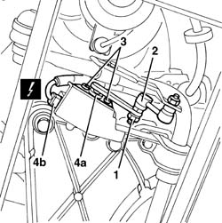

5540C46 sensor for correcting/aligning gas discharge lighting units on rear suspension - r r
- Path
- Procedures > 55 ELECTRICAL EQUIPMENT > 5540 EXTERIOR LIGHTING > 5540C headlamp/light cluster alignment correction devices > 5540C46 sensor for correcting/aligning gas discharge lighting units on rear suspension - r r
- Kind
- repair procedure (removal / refitting; the operation number is the code)
- Applies to
- all engines; all production periods
- Interactive page
- https://sloeber94.github.io/elrnDB-a156/en/#/3238464
Applies to: all engines; all production periods
 Removing
Removing
 Refitting
RefittingPlace the vehicle on a lift and raise.
1. Working under the left rear suspension, undo the nut fixing the connecting rod.
2. Disconnect the link from the sensor lever.
3. Undo the bolts fixing the sensor.
4. Move the sensor (4a) and disconnect the electrical connection (4b), then keep the sensor.
 | Name | Connector |
|---|---|---|
4b | Headlamp aglinment rear potentiometer |

Applies to: all engines; all production periods
Refitting
RemovingCheck that the sensor is not damaged.
Connect the sensor electrical connection.
Position the sensor and secure it using the bolt.
Connect the link to the sensor lever and tighten the nut.
Remove the vehicle from the lift.
Zero the headlamp position using an Examiner or another tester.